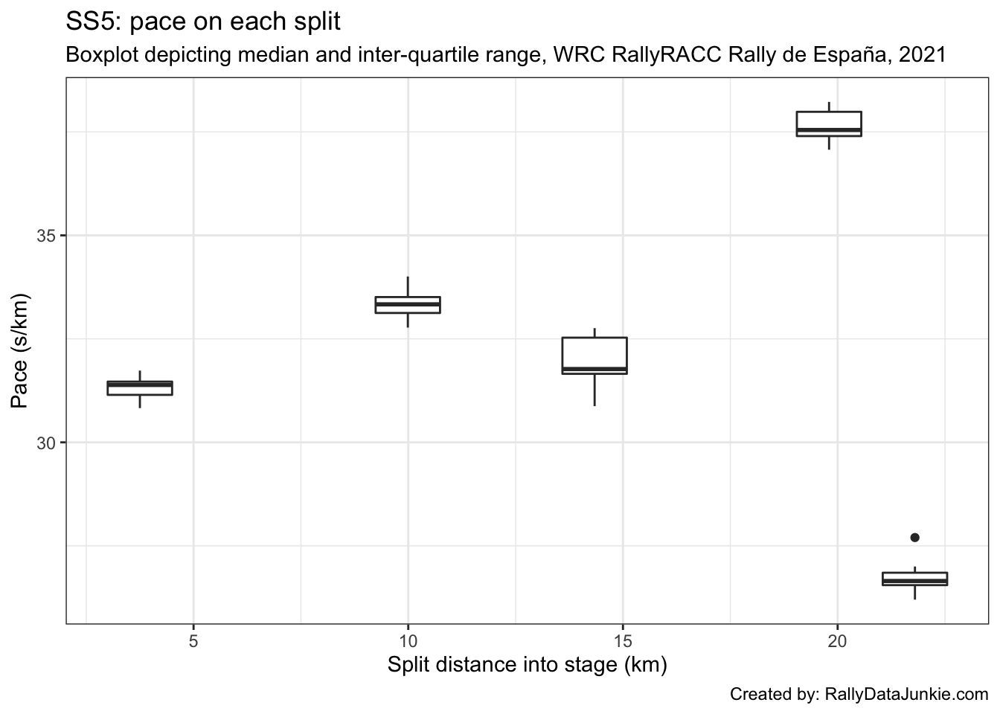
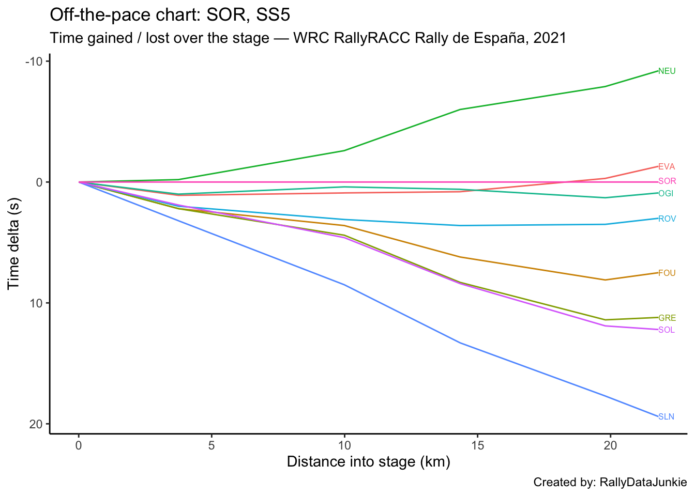

5 SS5 Results
| Pos | Car | Code | Time (s) | Gap | Diff |
|---|---|---|---|---|---|
| 1 | 11 | NEU | 709.2 | 0.0 | 0.0 |
| 2 | 33 | EVA | 717.1 | 7.9 | 7.9 |
| 3 | 6 | SOR | 718.4 | 9.2 | 1.3 |
| 4 | 1 | OGI | 719.3 | 10.1 | 0.9 |
| 5 | 69 | ROV | 721.4 | 12.2 | 2.1 |
| 6 | 16 | FOU | 725.9 | 16.7 | 4.5 |
| 7 | 44 | GRE | 729.6 | 20.4 | 3.7 |
| 8 | 2 | SOL | 730.6 | 21.4 | 1.0 |
| 9 | 14 | SLN | 737.8 | 28.6 | 7.2 |
5.1 Stage SS5 Splits Analysis
Reports on splits
5.1.1 Split Locations
Length of each split section in km:
| full_split_distances | stage_dist | |
|---|---|---|
| split_1 | 3.75 | 3.75 |
| split_2 | 6.24 | 9.99 |
| split_3 | 4.35 | 14.34 |
| split_4 | 5.46 | 19.80 |
| split_N | 2.00 | 21.80 |
5.1.2 Stage Split Times & Result
Summary of stage split times and overall stage result:
| code | split_1 | split_2 | split_3 | split_4 | split_N | diffFirstS | position |
|---|---|---|---|---|---|---|---|
| NEU | 115.6 | 320.1 | 454.4 | 656.8 | 709.2 | 0.0 | 1 |
| EVA | 116.9 | 323.6 | 461.2 | 664.4 | 717.1 | 7.9 | 2 |
| SOR | 115.8 | 322.7 | 460.4 | 664.7 | 718.4 | 9.2 | 3 |
| OGI | 116.8 | 323.1 | 461.0 | 666.0 | 719.3 | 10.1 | 4 |
| ROV | 117.8 | 325.8 | 464.0 | 668.2 | 721.4 | 12.2 | 5 |
| FOU | 118.0 | 326.3 | 466.6 | 672.8 | 725.9 | 16.7 | 6 |
| GRE | 118.0 | 327.1 | 468.7 | 676.1 | 729.6 | 20.4 | 7 |
| SOL | 117.7 | 327.3 | 468.8 | 676.6 | 730.6 | 21.4 | 8 |
| SLN | 119.0 | 331.2 | 473.7 | 682.4 | 737.8 | 28.6 | 9 |
5.1.3 Split Time Rankings
Rank of each split time:
| code | split_1 | split_2 | split_3 | split_4 | split_N |
|---|---|---|---|---|---|
| NEU | 1 | 1 | 1 | 1 | 1 |
| EVA | 4 | 4 | 4 | 2 | 2 |
| SOR | 2 | 2 | 2 | 3 | 3 |
| OGI | 3 | 3 | 3 | 4 | 4 |
| ROV | 6 | 5 | 5 | 5 | 5 |
| FOU | 7 | 6 | 6 | 6 | 6 |
| GRE | 7 | 7 | 7 | 7 | 7 |
| SOL | 5 | 8 | 8 | 8 | 8 |
| SLN | 8 | 9 | 9 | 9 | 9 |
Rank on each split section:
| code | split_1 | split_2 | split_3 | split_4 | split_N |
|---|---|---|---|---|---|
| NEU | 1 | 1 | 1 | 1 | 1 |
| EVA | 4 | 3 | 2 | 2 | 2 |
| SOR | 2 | 4 | 3 | 4 | 7 |
| OGI | 3 | 2 | 4 | 5 | 5 |
| ROV | 6 | 5 | 5 | 3 | 4 |
| FOU | 7 | 6 | 6 | 6 | 3 |
| GRE | 7 | 7 | 8 | 7 | 6 |
| SOL | 5 | 8 | 7 | 8 | 8 |
| SLN | 8 | 9 | 9 | 9 | 9 |
5.1.4 Split Section Pace
Pace is measured in seconds per kilometer, which is to say, how long it takes to complete each kilometer (lower is better):
| code | split_1 | split_2 | split_3 | split_4 | split_N |
|---|---|---|---|---|---|
| NEU | 30.83 | 32.77 | 30.87 | 37.07 | 26.20 |
| EVA | 31.17 | 33.12 | 31.63 | 37.22 | 26.35 |
| SOR | 30.88 | 33.16 | 31.66 | 37.42 | 26.85 |
| OGI | 31.15 | 33.06 | 31.70 | 37.55 | 26.65 |
| ROV | 31.41 | 33.33 | 31.77 | 37.40 | 26.60 |
| FOU | 31.47 | 33.38 | 32.25 | 37.77 | 26.55 |
| GRE | 31.47 | 33.51 | 32.55 | 37.99 | 26.75 |
| SOL | 31.39 | 33.59 | 32.53 | 38.06 | 27.00 |
| SLN | 31.73 | 34.01 | 32.76 | 38.22 | 27.70 |
5.1.5 Pace Chart
Pace relative to the stage winner.
5.1.6 Ultimate Stage Comparisons
Split time comparisons relative to various ultimate stage time calculations.
These views provide various ways of comparing the performance of each driver to various ghost drivers:
- best recorded split time at each split (ultimate actuals): gives an estimate of how well the driver’s split times compare with each first ranked split time (time into stage at each split);
- fastest time going from one split to the next (ultimate sections): gives an estimate of how quickly each driver completed each split section relative to the quickest time recorded completing that split section (time taken to go from one split point to the next);
- accumulated ultimate sections times: gives and estimate of how quickly the driver is going relative to the fastest possible completion of the stage based on accumulated ultimate split section times.
5.1.6.1 Ultimate Actuals
Driver times compared to the first ranked recorded split time at each split:
| code | split_1 | split_2 | split_3 | split_4 | split_N |
|---|---|---|---|---|---|
| NEU | 0.0 | 0.0 | 0.0 | 0.0 | 0.0 |
| EVA | 1.3 | 3.5 | 6.8 | 7.6 | 7.9 |
| SOR | 0.2 | 2.6 | 6.0 | 7.9 | 9.2 |
| OGI | 1.2 | 3.0 | 6.6 | 9.2 | 10.1 |
| ROV | 2.2 | 5.7 | 9.6 | 11.4 | 12.2 |
| FOU | 2.4 | 6.2 | 12.2 | 16.0 | 16.7 |
| GRE | 2.4 | 7.0 | 14.3 | 19.3 | 20.4 |
| SOL | 2.1 | 7.2 | 14.4 | 19.8 | 21.4 |
| SLN | 3.4 | 11.1 | 19.3 | 25.6 | 28.6 |
| ultimate | 0.0 | 0.0 | 0.0 | 0.0 | 0.0 |
5.1.6.2 Ultimate Sections
Split durations rebased relative to the fastest transit of each split section:
| code | split_1 | split_2 | split_3 | split_4 | split_N |
|---|---|---|---|---|---|
| NEU | 0.0 | 0.0 | 0.0 | 0.0 | 0.0 |
| EVA | 1.3 | 2.2 | 3.3 | 0.8 | 0.3 |
| SOR | 0.2 | 2.4 | 3.4 | 1.9 | 1.3 |
| OGI | 1.2 | 1.8 | 3.6 | 2.6 | 0.9 |
| ROV | 2.2 | 3.5 | 3.9 | 1.8 | 0.8 |
| FOU | 2.4 | 3.8 | 6.0 | 3.8 | 0.7 |
| GRE | 2.4 | 4.6 | 7.3 | 5.0 | 1.1 |
| SOL | 2.1 | 5.1 | 7.2 | 5.4 | 1.6 |
| SLN | 3.4 | 7.7 | 8.2 | 6.3 | 3.0 |
| ultimate | 0.0 | 0.0 | 0.0 | 0.0 | 0.0 |
5.1.6.3 Ultimate Accumulated Sections
Actual split times relative to the accumulated ultimate split section times:
| code | split_1 | split_2 | split_3 | split_4 | split_N |
|---|---|---|---|---|---|
| NEU | 0.0 | 0.0 | 0.0 | 0.0 | 0.0 |
| EVA | 1.3 | 3.5 | 6.8 | 7.6 | 7.9 |
| SOR | 0.2 | 2.6 | 6.0 | 7.9 | 9.2 |
| OGI | 1.2 | 3.0 | 6.6 | 9.2 | 10.1 |
| ROV | 2.2 | 5.7 | 9.6 | 11.4 | 12.2 |
| FOU | 2.4 | 6.2 | 12.2 | 16.0 | 16.7 |
| GRE | 2.4 | 7.0 | 14.3 | 19.3 | 20.4 |
| SOL | 2.1 | 7.2 | 14.4 | 19.8 | 21.4 |
| SLN | 3.4 | 11.1 | 19.3 | 25.6 | 28.6 |
| ultimate | 0.0 | 0.0 | 0.0 | 0.0 | 0.0 |
5.1.7 Split Section Pace Distribution
Distribution of pace values for each split section:

5.2 Text report
| code | identifier | entryId | stage | overall_pos | prev_position | retained_lead | lost_lead | gained_lead | overall_position_delta | overall_chase_code | overall_lead_code | overall_gap | overall_diff | overall_chase | overall_stage_pos | stage_position | stage_win | position | TimeInS | gap | diff | chase | chase_code | lead_code |
|---|---|---|---|---|---|---|---|---|---|---|---|---|---|---|---|---|---|---|---|---|---|---|---|---|
| NEU | 11 | 24007 | SS5 | 1 | 2 | FALSE | FALSE | TRUE | 1 | EVA | NA | 0.0 | NA | 0.3 | 1 | 1 | TRUE | 1 | 709.2 | 0.0 | 0.0 | 7.9 | EVA | NA |
| EVA | 33 | 24006 | SS5 | 2 | 1 | FALSE | TRUE | FALSE | -1 | OGI | NEU | 0.3 | 0.3 | 17.8 | 2 | 2 | FALSE | 2 | 717.1 | 7.9 | 7.9 | 1.3 | SOR | NEU |
| SOR | 6 | 24012 | SS5 | 4 | 4 | FALSE | FALSE | FALSE | 0 | ROV | OGI | 23.8 | 5.7 | 10.8 | 3 | 3 | FALSE | 3 | 718.4 | 9.2 | 1.3 | 0.9 | OGI | EVA |
| OGI | 1 | 24005 | SS5 | 3 | 3 | FALSE | FALSE | FALSE | 0 | SOR | EVA | 18.1 | 17.8 | 5.7 | 4 | 4 | FALSE | 4 | 719.3 | 10.1 | 0.9 | 2.1 | ROV | SOR |
| ROV | 69 | 24008 | SS5 | 5 | 5 | FALSE | FALSE | FALSE | 0 | FOU | SOR | 34.6 | 10.8 | 32.8 | 5 | 5 | FALSE | 5 | 721.4 | 12.2 | 2.1 | 4.5 | FOU | OGI |
| FOU | 16 | 24013 | SS5 | 6 | 6 | FALSE | FALSE | FALSE | 0 | GRE | ROV | 67.4 | 32.8 | 16.4 | 6 | 6 | FALSE | 6 | 725.9 | 16.7 | 4.5 | 3.7 | GRE | ROV |
| GRE | 44 | 24011 | SS5 | 7 | 7 | FALSE | FALSE | FALSE | 0 | SOL | FOU | 83.8 | 16.4 | 22.6 | 7 | 7 | FALSE | 7 | 729.6 | 20.4 | 3.7 | 1.0 | SOL | FOU |
| SOL | 2 | 24015 | SS5 | 8 | 8 | FALSE | FALSE | FALSE | 0 | SLN | GRE | 106.4 | 22.6 | 31.3 | 8 | 8 | FALSE | 8 | 730.6 | 21.4 | 1.0 | 7.2 | SLN | GRE |
| SLN | 14 | 24014 | SS5 | 9 | 9 | FALSE | FALSE | FALSE | 0 | TÄN | SOL | 137.7 | 31.3 | NA | 9 | 9 | FALSE | 9 | 737.8 | 28.6 | 7.2 | NA | TÄN | SOL |
| TÄN | 8 | 24009 | SS5 | NA | NA | FALSE | FALSE | FALSE | NA | NA | SLN | NA | NA | NA | NA | 10 | FALSE | 10 | NA | NA | NA | NA | NA | SLN |
Stage report for SS5:
NEU took the stage win and picked up one place to take the overall lead of the rally taking a time of 709.2s.
EVA took second place on stage, 7.9s behind the stage winner in a time of 717.1s and dropped one place to lose the overall lead, falling back to second overall.
SOR was in third place on stage, 1.3s further back behind EVA .
OGI was in fourth position on stage, 10.1s behind NEU, just 0.9s off SOR.
ROV took fifth place on stage, with a time of 721.4s .
FOU was in sixth on stage, 4.5s further back behind ROV .
GRE was in seventh on stage, 20.4s behind NEU in a time of 729.6s .
SOL was in eighth on stage, 21.4s behind NEU in a time of 730.6s .
SLN took ninth position on stage, with a time of 737.8s .
5.3 Driver Report, SS5 - OGI
OGI was in fourth position on stage, 10.1s behind NEU, just 0.9s off SOR.
Stage report for OGI.
| Pos | Car | Code | Time (s) | Gap | Diff |
|---|---|---|---|---|---|
| 1 | 11 | NEU | -10.1 | -10.1 | 0.0 |
| 2 | 33 | EVA | -2.2 | -2.2 | 7.9 |
| 3 | 6 | SOR | -0.9 | -0.9 | 1.3 |
| 4 | 1 | OGI | 0.0 | 0.0 | 0.9 |
| 5 | 69 | ROV | 2.1 | 2.1 | 2.1 |
| 6 | 16 | FOU | 6.6 | 6.6 | 4.5 |
| 7 | 44 | GRE | 10.3 | 10.3 | 3.7 |
| 8 | 2 | SOL | 11.3 | 11.3 | 1.0 |
| 9 | 14 | SLN | 18.5 | 18.5 | 7.2 |
5.3.1 Rebased Split Times
OGI’s delta at each split compared to other drivers.
| code | split_1 | split_2 | split_3 | split_4 | split_N |
|---|---|---|---|---|---|
| NEU | -1.2 | -3.0 | -6.6 | -9.2 | -10.1 |
| EVA | 0.1 | 0.5 | 0.2 | -1.6 | -2.2 |
| SOR | -1.0 | -0.4 | -0.6 | -1.3 | -0.9 |
| OGI | 0.0 | 0.0 | 0.0 | 0.0 | 0.0 |
| ROV | 1.0 | 2.7 | 3.0 | 2.2 | 2.1 |
| FOU | 1.2 | 3.2 | 5.6 | 6.8 | 6.6 |
| GRE | 1.2 | 4.0 | 7.7 | 10.1 | 10.3 |
| SOL | 0.9 | 4.2 | 7.8 | 10.6 | 11.3 |
| SLN | 2.2 | 8.1 | 12.7 | 16.4 | 18.5 |
5.3.2 Off-the-Pace Chart
Accumulated stage time deltas at each split:
5.3.3 Within-Split Duration Deltas
OGI’s delta in time to complete each split section compared to other drivers:
| code | split_1 | split_2 | split_3 | split_4 | split_N |
|---|---|---|---|---|---|
| NEU | -1.2 | -1.8 | -3.6 | -2.6 | -0.9 |
| EVA | 0.1 | 0.4 | -0.3 | -1.8 | -0.6 |
| SOR | -1.0 | 0.6 | -0.2 | -0.7 | 0.4 |
| OGI | 0.0 | 0.0 | 0.0 | 0.0 | 0.0 |
| ROV | 1.0 | 1.7 | 0.3 | -0.8 | -0.1 |
| FOU | 1.2 | 2.0 | 2.4 | 1.2 | -0.2 |
| GRE | 1.2 | 2.8 | 3.7 | 2.4 | 0.2 |
| SOL | 0.9 | 3.3 | 3.6 | 2.8 | 0.7 |
| SLN | 2.2 | 5.9 | 4.6 | 3.7 | 2.1 |
5.3.4 Within-Split Pace Deltas
| code | split_1 | split_2 | split_3 | split_4 | split_N |
|---|---|---|---|---|---|
| NEU | -0.32 | -0.29 | -0.83 | -0.48 | -0.45 |
| EVA | 0.03 | 0.06 | -0.07 | -0.33 | -0.30 |
| SOR | -0.27 | 0.10 | -0.05 | -0.13 | 0.20 |
| OGI | 0.00 | 0.00 | 0.00 | 0.00 | 0.00 |
| ROV | 0.27 | 0.27 | 0.07 | -0.15 | -0.05 |
| FOU | 0.32 | 0.32 | 0.55 | 0.22 | -0.10 |
| GRE | 0.32 | 0.45 | 0.85 | 0.44 | 0.10 |
| SOL | 0.24 | 0.53 | 0.83 | 0.51 | 0.35 |
| SLN | 0.59 | 0.95 | 1.06 | 0.68 | 1.05 |
5.3.5 Within-Split Pace Map
5.4 Driver Report, SS5 - EVA
EVA took second place on stage, 7.9s behind the stage winner in a time of 717.1s and dropped one place to lose the overall lead, falling back to second overall.
Stage report for EVA.
| Pos | Car | Code | Time (s) | Gap | Diff |
|---|---|---|---|---|---|
| 1 | 11 | NEU | -7.9 | -7.9 | 0.0 |
| 2 | 33 | EVA | 0.0 | 0.0 | 7.9 |
| 3 | 6 | SOR | 1.3 | 1.3 | 1.3 |
| 4 | 1 | OGI | 2.2 | 2.2 | 0.9 |
| 5 | 69 | ROV | 4.3 | 4.3 | 2.1 |
| 6 | 16 | FOU | 8.8 | 8.8 | 4.5 |
| 7 | 44 | GRE | 12.5 | 12.5 | 3.7 |
| 8 | 2 | SOL | 13.5 | 13.5 | 1.0 |
| 9 | 14 | SLN | 20.7 | 20.7 | 7.2 |
5.4.1 Rebased Split Times
EVA’s delta at each split compared to other drivers.
| code | split_1 | split_2 | split_3 | split_4 | split_N |
|---|---|---|---|---|---|
| NEU | -1.3 | -3.5 | -6.8 | -7.6 | -7.9 |
| EVA | 0.0 | 0.0 | 0.0 | 0.0 | 0.0 |
| SOR | -1.1 | -0.9 | -0.8 | 0.3 | 1.3 |
| OGI | -0.1 | -0.5 | -0.2 | 1.6 | 2.2 |
| ROV | 0.9 | 2.2 | 2.8 | 3.8 | 4.3 |
| FOU | 1.1 | 2.7 | 5.4 | 8.4 | 8.8 |
| GRE | 1.1 | 3.5 | 7.5 | 11.7 | 12.5 |
| SOL | 0.8 | 3.7 | 7.6 | 12.2 | 13.5 |
| SLN | 2.1 | 7.6 | 12.5 | 18.0 | 20.7 |
5.4.2 Off-the-Pace Chart
Accumulated stage time deltas at each split:
5.4.3 Within-Split Duration Deltas
EVA’s delta in time to complete each split section compared to other drivers:
| code | split_1 | split_2 | split_3 | split_4 | split_N |
|---|---|---|---|---|---|
| NEU | -1.3 | -2.2 | -3.3 | -0.8 | -0.3 |
| EVA | 0.0 | 0.0 | 0.0 | 0.0 | 0.0 |
| SOR | -1.1 | 0.2 | 0.1 | 1.1 | 1.0 |
| OGI | -0.1 | -0.4 | 0.3 | 1.8 | 0.6 |
| ROV | 0.9 | 1.3 | 0.6 | 1.0 | 0.5 |
| FOU | 1.1 | 1.6 | 2.7 | 3.0 | 0.4 |
| GRE | 1.1 | 2.4 | 4.0 | 4.2 | 0.8 |
| SOL | 0.8 | 2.9 | 3.9 | 4.6 | 1.3 |
| SLN | 2.1 | 5.5 | 4.9 | 5.5 | 2.7 |
5.4.4 Within-Split Pace Deltas
| code | split_1 | split_2 | split_3 | split_4 | split_N |
|---|---|---|---|---|---|
| NEU | -0.35 | -0.35 | -0.76 | -0.15 | -0.15 |
| EVA | 0.00 | 0.00 | 0.00 | 0.00 | 0.00 |
| SOR | -0.29 | 0.03 | 0.02 | 0.20 | 0.50 |
| OGI | -0.03 | -0.06 | 0.07 | 0.33 | 0.30 |
| ROV | 0.24 | 0.21 | 0.14 | 0.18 | 0.25 |
| FOU | 0.29 | 0.26 | 0.62 | 0.55 | 0.20 |
| GRE | 0.29 | 0.38 | 0.92 | 0.77 | 0.40 |
| SOL | 0.21 | 0.46 | 0.90 | 0.84 | 0.65 |
| SLN | 0.56 | 0.88 | 1.13 | 1.01 | 1.35 |
5.4.5 Within-Split Pace Map
5.5 Driver Report, SS5 - NEU
NEU took the stage win and picked up one place to take the overall lead of the rally taking a time of 709.2s.
Stage report for NEU.
| Pos | Car | Code | Time (s) | Gap | Diff |
|---|---|---|---|---|---|
| 1 | 11 | NEU | 0.0 | 0.0 | 0.0 |
| 2 | 33 | EVA | 7.9 | 7.9 | 7.9 |
| 3 | 6 | SOR | 9.2 | 9.2 | 1.3 |
| 4 | 1 | OGI | 10.1 | 10.1 | 0.9 |
| 5 | 69 | ROV | 12.2 | 12.2 | 2.1 |
| 6 | 16 | FOU | 16.7 | 16.7 | 4.5 |
| 7 | 44 | GRE | 20.4 | 20.4 | 3.7 |
| 8 | 2 | SOL | 21.4 | 21.4 | 1.0 |
| 9 | 14 | SLN | 28.6 | 28.6 | 7.2 |
5.5.1 Rebased Split Times
NEU’s delta at each split compared to other drivers.
| code | split_1 | split_2 | split_3 | split_4 | split_N |
|---|---|---|---|---|---|
| NEU | 0.0 | 0.0 | 0.0 | 0.0 | 0.0 |
| EVA | 1.3 | 3.5 | 6.8 | 7.6 | 7.9 |
| SOR | 0.2 | 2.6 | 6.0 | 7.9 | 9.2 |
| OGI | 1.2 | 3.0 | 6.6 | 9.2 | 10.1 |
| ROV | 2.2 | 5.7 | 9.6 | 11.4 | 12.2 |
| FOU | 2.4 | 6.2 | 12.2 | 16.0 | 16.7 |
| GRE | 2.4 | 7.0 | 14.3 | 19.3 | 20.4 |
| SOL | 2.1 | 7.2 | 14.4 | 19.8 | 21.4 |
| SLN | 3.4 | 11.1 | 19.3 | 25.6 | 28.6 |
5.5.2 Off-the-Pace Chart
Accumulated stage time deltas at each split:
5.5.3 Within-Split Duration Deltas
NEU’s delta in time to complete each split section compared to other drivers:
| code | split_1 | split_2 | split_3 | split_4 | split_N |
|---|---|---|---|---|---|
| NEU | 0.0 | 0.0 | 0.0 | 0.0 | 0.0 |
| EVA | 1.3 | 2.2 | 3.3 | 0.8 | 0.3 |
| SOR | 0.2 | 2.4 | 3.4 | 1.9 | 1.3 |
| OGI | 1.2 | 1.8 | 3.6 | 2.6 | 0.9 |
| ROV | 2.2 | 3.5 | 3.9 | 1.8 | 0.8 |
| FOU | 2.4 | 3.8 | 6.0 | 3.8 | 0.7 |
| GRE | 2.4 | 4.6 | 7.3 | 5.0 | 1.1 |
| SOL | 2.1 | 5.1 | 7.2 | 5.4 | 1.6 |
| SLN | 3.4 | 7.7 | 8.2 | 6.3 | 3.0 |
5.5.4 Within-Split Pace Deltas
| code | split_1 | split_2 | split_3 | split_4 | split_N |
|---|---|---|---|---|---|
| NEU | 0.00 | 0.00 | 0.00 | 0.00 | 0.00 |
| EVA | 0.35 | 0.35 | 0.76 | 0.15 | 0.15 |
| SOR | 0.05 | 0.38 | 0.78 | 0.35 | 0.65 |
| OGI | 0.32 | 0.29 | 0.83 | 0.48 | 0.45 |
| ROV | 0.59 | 0.56 | 0.90 | 0.33 | 0.40 |
| FOU | 0.64 | 0.61 | 1.38 | 0.70 | 0.35 |
| GRE | 0.64 | 0.74 | 1.68 | 0.92 | 0.55 |
| SOL | 0.56 | 0.82 | 1.66 | 0.99 | 0.80 |
| SLN | 0.91 | 1.23 | 1.89 | 1.15 | 1.50 |
5.5.5 Within-Split Pace Map
5.6 Driver Report, SS5 - ROV
ROV took fifth place on stage, with a time of 721.4s .
Stage report for ROV.
| Pos | Car | Code | Time (s) | Gap | Diff |
|---|---|---|---|---|---|
| 1 | 11 | NEU | -12.2 | -12.2 | 0.0 |
| 2 | 33 | EVA | -4.3 | -4.3 | 7.9 |
| 3 | 6 | SOR | -3.0 | -3.0 | 1.3 |
| 4 | 1 | OGI | -2.1 | -2.1 | 0.9 |
| 5 | 69 | ROV | 0.0 | 0.0 | 2.1 |
| 6 | 16 | FOU | 4.5 | 4.5 | 4.5 |
| 7 | 44 | GRE | 8.2 | 8.2 | 3.7 |
| 8 | 2 | SOL | 9.2 | 9.2 | 1.0 |
| 9 | 14 | SLN | 16.4 | 16.4 | 7.2 |
5.6.1 Rebased Split Times
ROV’s delta at each split compared to other drivers.
| code | split_1 | split_2 | split_3 | split_4 | split_N |
|---|---|---|---|---|---|
| NEU | -2.2 | -5.7 | -9.6 | -11.4 | -12.2 |
| EVA | -0.9 | -2.2 | -2.8 | -3.8 | -4.3 |
| SOR | -2.0 | -3.1 | -3.6 | -3.5 | -3.0 |
| OGI | -1.0 | -2.7 | -3.0 | -2.2 | -2.1 |
| ROV | 0.0 | 0.0 | 0.0 | 0.0 | 0.0 |
| FOU | 0.2 | 0.5 | 2.6 | 4.6 | 4.5 |
| GRE | 0.2 | 1.3 | 4.7 | 7.9 | 8.2 |
| SOL | -0.1 | 1.5 | 4.8 | 8.4 | 9.2 |
| SLN | 1.2 | 5.4 | 9.7 | 14.2 | 16.4 |
5.6.2 Off-the-Pace Chart
Accumulated stage time deltas at each split:
5.6.3 Within-Split Duration Deltas
ROV’s delta in time to complete each split section compared to other drivers:
| code | split_1 | split_2 | split_3 | split_4 | split_N |
|---|---|---|---|---|---|
| NEU | -2.2 | -3.5 | -3.9 | -1.8 | -0.8 |
| EVA | -0.9 | -1.3 | -0.6 | -1.0 | -0.5 |
| SOR | -2.0 | -1.1 | -0.5 | 0.1 | 0.5 |
| OGI | -1.0 | -1.7 | -0.3 | 0.8 | 0.1 |
| ROV | 0.0 | 0.0 | 0.0 | 0.0 | 0.0 |
| FOU | 0.2 | 0.3 | 2.1 | 2.0 | -0.1 |
| GRE | 0.2 | 1.1 | 3.4 | 3.2 | 0.3 |
| SOL | -0.1 | 1.6 | 3.3 | 3.6 | 0.8 |
| SLN | 1.2 | 4.2 | 4.3 | 4.5 | 2.2 |
5.6.4 Within-Split Pace Deltas
| code | split_1 | split_2 | split_3 | split_4 | split_N |
|---|---|---|---|---|---|
| NEU | -0.59 | -0.56 | -0.90 | -0.33 | -0.40 |
| EVA | -0.24 | -0.21 | -0.14 | -0.18 | -0.25 |
| SOR | -0.53 | -0.18 | -0.11 | 0.02 | 0.25 |
| OGI | -0.27 | -0.27 | -0.07 | 0.15 | 0.05 |
| ROV | 0.00 | 0.00 | 0.00 | 0.00 | 0.00 |
| FOU | 0.05 | 0.05 | 0.48 | 0.37 | -0.05 |
| GRE | 0.05 | 0.18 | 0.78 | 0.59 | 0.15 |
| SOL | -0.03 | 0.26 | 0.76 | 0.66 | 0.40 |
| SLN | 0.32 | 0.67 | 0.99 | 0.82 | 1.10 |
5.6.5 Within-Split Pace Map
5.7 Driver Report, SS5 - TÄN
No stage report for TÄN.
5.8 Driver Report, SS5 - KAT
No stage report for KAT.
5.9 Driver Report, SS5 - GRE
GRE was in seventh on stage, 20.4s behind NEU in a time of 729.6s .
Stage report for GRE.
| Pos | Car | Code | Time (s) | Gap | Diff |
|---|---|---|---|---|---|
| 1 | 11 | NEU | -20.4 | -20.4 | 0.0 |
| 2 | 33 | EVA | -12.5 | -12.5 | 7.9 |
| 3 | 6 | SOR | -11.2 | -11.2 | 1.3 |
| 4 | 1 | OGI | -10.3 | -10.3 | 0.9 |
| 5 | 69 | ROV | -8.2 | -8.2 | 2.1 |
| 6 | 16 | FOU | -3.7 | -3.7 | 4.5 |
| 7 | 44 | GRE | 0.0 | 0.0 | 3.7 |
| 8 | 2 | SOL | 1.0 | 1.0 | 1.0 |
| 9 | 14 | SLN | 8.2 | 8.2 | 7.2 |
5.9.1 Rebased Split Times
GRE’s delta at each split compared to other drivers.
| code | split_1 | split_2 | split_3 | split_4 | split_N |
|---|---|---|---|---|---|
| NEU | -2.4 | -7.0 | -14.3 | -19.3 | -20.4 |
| EVA | -1.1 | -3.5 | -7.5 | -11.7 | -12.5 |
| SOR | -2.2 | -4.4 | -8.3 | -11.4 | -11.2 |
| OGI | -1.2 | -4.0 | -7.7 | -10.1 | -10.3 |
| ROV | -0.2 | -1.3 | -4.7 | -7.9 | -8.2 |
| FOU | 0.0 | -0.8 | -2.1 | -3.3 | -3.7 |
| GRE | 0.0 | 0.0 | 0.0 | 0.0 | 0.0 |
| SOL | -0.3 | 0.2 | 0.1 | 0.5 | 1.0 |
| SLN | 1.0 | 4.1 | 5.0 | 6.3 | 8.2 |
5.9.2 Off-the-Pace Chart
Accumulated stage time deltas at each split:
5.9.3 Within-Split Duration Deltas
GRE’s delta in time to complete each split section compared to other drivers:
| code | split_1 | split_2 | split_3 | split_4 | split_N |
|---|---|---|---|---|---|
| NEU | -2.4 | -4.6 | -7.3 | -5.0 | -1.1 |
| EVA | -1.1 | -2.4 | -4.0 | -4.2 | -0.8 |
| SOR | -2.2 | -2.2 | -3.9 | -3.1 | 0.2 |
| OGI | -1.2 | -2.8 | -3.7 | -2.4 | -0.2 |
| ROV | -0.2 | -1.1 | -3.4 | -3.2 | -0.3 |
| FOU | 0.0 | -0.8 | -1.3 | -1.2 | -0.4 |
| GRE | 0.0 | 0.0 | 0.0 | 0.0 | 0.0 |
| SOL | -0.3 | 0.5 | -0.1 | 0.4 | 0.5 |
| SLN | 1.0 | 3.1 | 0.9 | 1.3 | 1.9 |
5.9.4 Within-Split Pace Deltas
| code | split_1 | split_2 | split_3 | split_4 | split_N |
|---|---|---|---|---|---|
| NEU | -0.64 | -0.74 | -1.68 | -0.92 | -0.55 |
| EVA | -0.29 | -0.38 | -0.92 | -0.77 | -0.40 |
| SOR | -0.59 | -0.35 | -0.90 | -0.57 | 0.10 |
| OGI | -0.32 | -0.45 | -0.85 | -0.44 | -0.10 |
| ROV | -0.05 | -0.18 | -0.78 | -0.59 | -0.15 |
| FOU | 0.00 | -0.13 | -0.30 | -0.22 | -0.20 |
| GRE | 0.00 | 0.00 | 0.00 | 0.00 | 0.00 |
| SOL | -0.08 | 0.08 | -0.02 | 0.07 | 0.25 |
| SLN | 0.27 | 0.50 | 0.21 | 0.24 | 0.95 |
5.9.5 Within-Split Pace Map
5.10 Driver Report, SS5 - SOR
SOR was in third place on stage, 1.3s further back behind EVA .
Stage report for SOR.
| Pos | Car | Code | Time (s) | Gap | Diff |
|---|---|---|---|---|---|
| 1 | 11 | NEU | -9.2 | -9.2 | 0.0 |
| 2 | 33 | EVA | -1.3 | -1.3 | 7.9 |
| 3 | 6 | SOR | 0.0 | 0.0 | 1.3 |
| 4 | 1 | OGI | 0.9 | 0.9 | 0.9 |
| 5 | 69 | ROV | 3.0 | 3.0 | 2.1 |
| 6 | 16 | FOU | 7.5 | 7.5 | 4.5 |
| 7 | 44 | GRE | 11.2 | 11.2 | 3.7 |
| 8 | 2 | SOL | 12.2 | 12.2 | 1.0 |
| 9 | 14 | SLN | 19.4 | 19.4 | 7.2 |
5.10.1 Rebased Split Times
SOR’s delta at each split compared to other drivers.
| code | split_1 | split_2 | split_3 | split_4 | split_N |
|---|---|---|---|---|---|
| NEU | -0.2 | -2.6 | -6.0 | -7.9 | -9.2 |
| EVA | 1.1 | 0.9 | 0.8 | -0.3 | -1.3 |
| SOR | 0.0 | 0.0 | 0.0 | 0.0 | 0.0 |
| OGI | 1.0 | 0.4 | 0.6 | 1.3 | 0.9 |
| ROV | 2.0 | 3.1 | 3.6 | 3.5 | 3.0 |
| FOU | 2.2 | 3.6 | 6.2 | 8.1 | 7.5 |
| GRE | 2.2 | 4.4 | 8.3 | 11.4 | 11.2 |
| SOL | 1.9 | 4.6 | 8.4 | 11.9 | 12.2 |
| SLN | 3.2 | 8.5 | 13.3 | 17.7 | 19.4 |
5.10.2 Off-the-Pace Chart
Accumulated stage time deltas at each split:

5.10.3 Within-Split Duration Deltas
SOR’s delta in time to complete each split section compared to other drivers:
| code | split_1 | split_2 | split_3 | split_4 | split_N |
|---|---|---|---|---|---|
| NEU | -0.2 | -2.4 | -3.4 | -1.9 | -1.3 |
| EVA | 1.1 | -0.2 | -0.1 | -1.1 | -1.0 |
| SOR | 0.0 | 0.0 | 0.0 | 0.0 | 0.0 |
| OGI | 1.0 | -0.6 | 0.2 | 0.7 | -0.4 |
| ROV | 2.0 | 1.1 | 0.5 | -0.1 | -0.5 |
| FOU | 2.2 | 1.4 | 2.6 | 1.9 | -0.6 |
| GRE | 2.2 | 2.2 | 3.9 | 3.1 | -0.2 |
| SOL | 1.9 | 2.7 | 3.8 | 3.5 | 0.3 |
| SLN | 3.2 | 5.3 | 4.8 | 4.4 | 1.7 |
5.10.4 Within-Split Pace Deltas
| code | split_1 | split_2 | split_3 | split_4 | split_N |
|---|---|---|---|---|---|
| NEU | -0.05 | -0.38 | -0.78 | -0.35 | -0.65 |
| EVA | 0.29 | -0.03 | -0.02 | -0.20 | -0.50 |
| SOR | 0.00 | 0.00 | 0.00 | 0.00 | 0.00 |
| OGI | 0.27 | -0.10 | 0.05 | 0.13 | -0.20 |
| ROV | 0.53 | 0.18 | 0.11 | -0.02 | -0.25 |
| FOU | 0.59 | 0.22 | 0.60 | 0.35 | -0.30 |
| GRE | 0.59 | 0.35 | 0.90 | 0.57 | -0.10 |
| SOL | 0.51 | 0.43 | 0.87 | 0.64 | 0.15 |
| SLN | 0.85 | 0.85 | 1.10 | 0.81 | 0.85 |
5.10.5 Within-Split Pace Map
5.11 Driver Report, SS5 - FOU
FOU was in sixth on stage, 4.5s further back behind ROV .
Stage report for FOU.
| Pos | Car | Code | Time (s) | Gap | Diff |
|---|---|---|---|---|---|
| 1 | 11 | NEU | -16.7 | -16.7 | 0.0 |
| 2 | 33 | EVA | -8.8 | -8.8 | 7.9 |
| 3 | 6 | SOR | -7.5 | -7.5 | 1.3 |
| 4 | 1 | OGI | -6.6 | -6.6 | 0.9 |
| 5 | 69 | ROV | -4.5 | -4.5 | 2.1 |
| 6 | 16 | FOU | 0.0 | 0.0 | 4.5 |
| 7 | 44 | GRE | 3.7 | 3.7 | 3.7 |
| 8 | 2 | SOL | 4.7 | 4.7 | 1.0 |
| 9 | 14 | SLN | 11.9 | 11.9 | 7.2 |
5.11.1 Rebased Split Times
FOU’s delta at each split compared to other drivers.
| code | split_1 | split_2 | split_3 | split_4 | split_N |
|---|---|---|---|---|---|
| NEU | -2.4 | -6.2 | -12.2 | -16.0 | -16.7 |
| EVA | -1.1 | -2.7 | -5.4 | -8.4 | -8.8 |
| SOR | -2.2 | -3.6 | -6.2 | -8.1 | -7.5 |
| OGI | -1.2 | -3.2 | -5.6 | -6.8 | -6.6 |
| ROV | -0.2 | -0.5 | -2.6 | -4.6 | -4.5 |
| FOU | 0.0 | 0.0 | 0.0 | 0.0 | 0.0 |
| GRE | 0.0 | 0.8 | 2.1 | 3.3 | 3.7 |
| SOL | -0.3 | 1.0 | 2.2 | 3.8 | 4.7 |
| SLN | 1.0 | 4.9 | 7.1 | 9.6 | 11.9 |
5.11.2 Off-the-Pace Chart
Accumulated stage time deltas at each split:
5.11.3 Within-Split Duration Deltas
FOU’s delta in time to complete each split section compared to other drivers:
| code | split_1 | split_2 | split_3 | split_4 | split_N |
|---|---|---|---|---|---|
| NEU | -2.4 | -3.8 | -6.0 | -3.8 | -0.7 |
| EVA | -1.1 | -1.6 | -2.7 | -3.0 | -0.4 |
| SOR | -2.2 | -1.4 | -2.6 | -1.9 | 0.6 |
| OGI | -1.2 | -2.0 | -2.4 | -1.2 | 0.2 |
| ROV | -0.2 | -0.3 | -2.1 | -2.0 | 0.1 |
| FOU | 0.0 | 0.0 | 0.0 | 0.0 | 0.0 |
| GRE | 0.0 | 0.8 | 1.3 | 1.2 | 0.4 |
| SOL | -0.3 | 1.3 | 1.2 | 1.6 | 0.9 |
| SLN | 1.0 | 3.9 | 2.2 | 2.5 | 2.3 |
5.11.4 Within-Split Pace Deltas
| code | split_1 | split_2 | split_3 | split_4 | split_N |
|---|---|---|---|---|---|
| NEU | -0.64 | -0.61 | -1.38 | -0.70 | -0.35 |
| EVA | -0.29 | -0.26 | -0.62 | -0.55 | -0.20 |
| SOR | -0.59 | -0.22 | -0.60 | -0.35 | 0.30 |
| OGI | -0.32 | -0.32 | -0.55 | -0.22 | 0.10 |
| ROV | -0.05 | -0.05 | -0.48 | -0.37 | 0.05 |
| FOU | 0.00 | 0.00 | 0.00 | 0.00 | 0.00 |
| GRE | 0.00 | 0.13 | 0.30 | 0.22 | 0.20 |
| SOL | -0.08 | 0.21 | 0.28 | 0.29 | 0.45 |
| SLN | 0.27 | 0.62 | 0.51 | 0.46 | 1.15 |
5.11.5 Within-Split Pace Map
5.12 Driver Report, SS5 - SLN
SLN took ninth position on stage, with a time of 737.8s .
Stage report for SLN.
| Pos | Car | Code | Time (s) | Gap | Diff |
|---|---|---|---|---|---|
| 1 | 11 | NEU | -28.6 | -28.6 | 0.0 |
| 2 | 33 | EVA | -20.7 | -20.7 | 7.9 |
| 3 | 6 | SOR | -19.4 | -19.4 | 1.3 |
| 4 | 1 | OGI | -18.5 | -18.5 | 0.9 |
| 5 | 69 | ROV | -16.4 | -16.4 | 2.1 |
| 6 | 16 | FOU | -11.9 | -11.9 | 4.5 |
| 7 | 44 | GRE | -8.2 | -8.2 | 3.7 |
| 8 | 2 | SOL | -7.2 | -7.2 | 1.0 |
| 9 | 14 | SLN | 0.0 | 0.0 | 7.2 |
5.12.1 Rebased Split Times
SLN’s delta at each split compared to other drivers.
| code | split_1 | split_2 | split_3 | split_4 | split_N |
|---|---|---|---|---|---|
| NEU | -3.4 | -11.1 | -19.3 | -25.6 | -28.6 |
| EVA | -2.1 | -7.6 | -12.5 | -18.0 | -20.7 |
| SOR | -3.2 | -8.5 | -13.3 | -17.7 | -19.4 |
| OGI | -2.2 | -8.1 | -12.7 | -16.4 | -18.5 |
| ROV | -1.2 | -5.4 | -9.7 | -14.2 | -16.4 |
| FOU | -1.0 | -4.9 | -7.1 | -9.6 | -11.9 |
| GRE | -1.0 | -4.1 | -5.0 | -6.3 | -8.2 |
| SOL | -1.3 | -3.9 | -4.9 | -5.8 | -7.2 |
| SLN | 0.0 | 0.0 | 0.0 | 0.0 | 0.0 |
5.12.2 Off-the-Pace Chart
Accumulated stage time deltas at each split:
5.12.3 Within-Split Duration Deltas
SLN’s delta in time to complete each split section compared to other drivers:
| code | split_1 | split_2 | split_3 | split_4 | split_N |
|---|---|---|---|---|---|
| NEU | -3.4 | -7.7 | -8.2 | -6.3 | -3.0 |
| EVA | -2.1 | -5.5 | -4.9 | -5.5 | -2.7 |
| SOR | -3.2 | -5.3 | -4.8 | -4.4 | -1.7 |
| OGI | -2.2 | -5.9 | -4.6 | -3.7 | -2.1 |
| ROV | -1.2 | -4.2 | -4.3 | -4.5 | -2.2 |
| FOU | -1.0 | -3.9 | -2.2 | -2.5 | -2.3 |
| GRE | -1.0 | -3.1 | -0.9 | -1.3 | -1.9 |
| SOL | -1.3 | -2.6 | -1.0 | -0.9 | -1.4 |
| SLN | 0.0 | 0.0 | 0.0 | 0.0 | 0.0 |
5.12.4 Within-Split Pace Deltas
| code | split_1 | split_2 | split_3 | split_4 | split_N |
|---|---|---|---|---|---|
| NEU | -0.91 | -1.23 | -1.89 | -1.15 | -1.50 |
| EVA | -0.56 | -0.88 | -1.13 | -1.01 | -1.35 |
| SOR | -0.85 | -0.85 | -1.10 | -0.81 | -0.85 |
| OGI | -0.59 | -0.95 | -1.06 | -0.68 | -1.05 |
| ROV | -0.32 | -0.67 | -0.99 | -0.82 | -1.10 |
| FOU | -0.27 | -0.62 | -0.51 | -0.46 | -1.15 |
| GRE | -0.27 | -0.50 | -0.21 | -0.24 | -0.95 |
| SOL | -0.35 | -0.42 | -0.23 | -0.16 | -0.70 |
| SLN | 0.00 | 0.00 | 0.00 | 0.00 | 0.00 |
5.12.5 Within-Split Pace Map
5.13 Driver Report, SS5 - SOL
SOL was in eighth on stage, 21.4s behind NEU in a time of 730.6s .
Stage report for SOL.
| Pos | Car | Code | Time (s) | Gap | Diff |
|---|---|---|---|---|---|
| 1 | 11 | NEU | -21.4 | -21.4 | 0.0 |
| 2 | 33 | EVA | -13.5 | -13.5 | 7.9 |
| 3 | 6 | SOR | -12.2 | -12.2 | 1.3 |
| 4 | 1 | OGI | -11.3 | -11.3 | 0.9 |
| 5 | 69 | ROV | -9.2 | -9.2 | 2.1 |
| 6 | 16 | FOU | -4.7 | -4.7 | 4.5 |
| 7 | 44 | GRE | -1.0 | -1.0 | 3.7 |
| 8 | 2 | SOL | 0.0 | 0.0 | 1.0 |
| 9 | 14 | SLN | 7.2 | 7.2 | 7.2 |
5.13.1 Rebased Split Times
SOL’s delta at each split compared to other drivers.
| code | split_1 | split_2 | split_3 | split_4 | split_N |
|---|---|---|---|---|---|
| NEU | -2.1 | -7.2 | -14.4 | -19.8 | -21.4 |
| EVA | -0.8 | -3.7 | -7.6 | -12.2 | -13.5 |
| SOR | -1.9 | -4.6 | -8.4 | -11.9 | -12.2 |
| OGI | -0.9 | -4.2 | -7.8 | -10.6 | -11.3 |
| ROV | 0.1 | -1.5 | -4.8 | -8.4 | -9.2 |
| FOU | 0.3 | -1.0 | -2.2 | -3.8 | -4.7 |
| GRE | 0.3 | -0.2 | -0.1 | -0.5 | -1.0 |
| SOL | 0.0 | 0.0 | 0.0 | 0.0 | 0.0 |
| SLN | 1.3 | 3.9 | 4.9 | 5.8 | 7.2 |
5.13.2 Off-the-Pace Chart
Accumulated stage time deltas at each split:
5.13.3 Within-Split Duration Deltas
SOL’s delta in time to complete each split section compared to other drivers:
| code | split_1 | split_2 | split_3 | split_4 | split_N |
|---|---|---|---|---|---|
| NEU | -2.1 | -5.1 | -7.2 | -5.4 | -1.6 |
| EVA | -0.8 | -2.9 | -3.9 | -4.6 | -1.3 |
| SOR | -1.9 | -2.7 | -3.8 | -3.5 | -0.3 |
| OGI | -0.9 | -3.3 | -3.6 | -2.8 | -0.7 |
| ROV | 0.1 | -1.6 | -3.3 | -3.6 | -0.8 |
| FOU | 0.3 | -1.3 | -1.2 | -1.6 | -0.9 |
| GRE | 0.3 | -0.5 | 0.1 | -0.4 | -0.5 |
| SOL | 0.0 | 0.0 | 0.0 | 0.0 | 0.0 |
| SLN | 1.3 | 2.6 | 1.0 | 0.9 | 1.4 |
5.13.4 Within-Split Pace Deltas
| code | split_1 | split_2 | split_3 | split_4 | split_N |
|---|---|---|---|---|---|
| NEU | -0.56 | -0.82 | -1.66 | -0.99 | -0.80 |
| EVA | -0.21 | -0.46 | -0.90 | -0.84 | -0.65 |
| SOR | -0.51 | -0.43 | -0.87 | -0.64 | -0.15 |
| OGI | -0.24 | -0.53 | -0.83 | -0.51 | -0.35 |
| ROV | 0.03 | -0.26 | -0.76 | -0.66 | -0.40 |
| FOU | 0.08 | -0.21 | -0.28 | -0.29 | -0.45 |
| GRE | 0.08 | -0.08 | 0.02 | -0.07 | -0.25 |
| SOL | 0.00 | 0.00 | 0.00 | 0.00 | 0.00 |
| SLN | 0.35 | 0.42 | 0.23 | 0.16 | 0.70 |
5.13.5 Within-Split Pace Map
5.14 Driver Report, SS5 - PER
No stage report for PER.